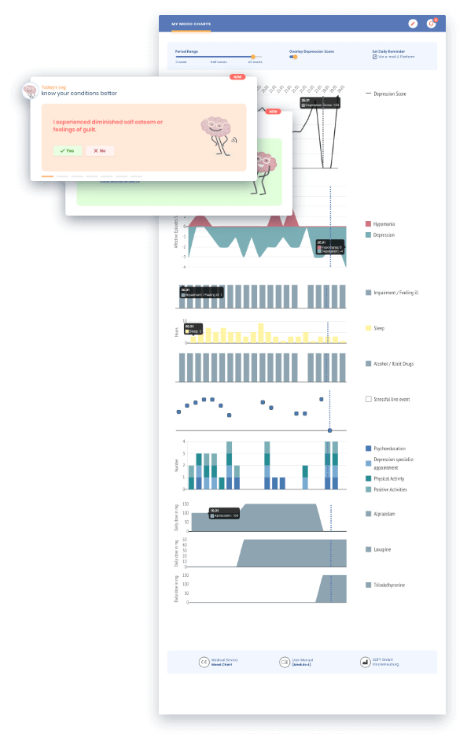

Affective illnesses like depression are characterized by a high susceptibility to fluctuating symptoms and by their temporal course. A symptom chart can indicate whether or not you are dealing with a depressive mood, so-called "blips" or a real depressive episode. Individual affective symptoms are recorded daily by the patient and a total value is formed.
Your advantages using our edupression.com® mood chart:
The visual representation of affective episodes and moods, as well as factors relevant to the illness such as changes in medication, life events, psychotherapy and positive activities can enable you to recognise the connection between symptoms and triggering environmental factors or therapeutic effects.
By continually recording affective symptoms, you will increase your awareness with regard to possible changes in the course of the illness. This makes early recognition and, consequently, a swift therapeutic intervention possible.
Since you will be sharing your individual mood chart with your doctor or psychotherapist, they will obtain a comprehensive view of the illness by gaining a better overview of the development of symptoms between therapy sessions. On this basis, both you and your depression specialist are aided in making important diagnostic and therapeutic decisions.

The edupression.com® mood chart was developed by our medical team and consists of 6 categories that capture the patient's mood and important influential factors.
Captures the sum of 12 of the most important depression symptoms including residual symptoms (which are important indicators for relapses). Developed for unipolar depression this is an extremely sensitive instrument to record your depression strength.
Record the polarity and severity of your affective episodes.
Document, whether you feel impaired / ill.
Capture in your edupression.com® mood chart your sleeping hours, the female cycle, consumption of drugs and alcohol and stressful life-events.
Record time spent time with psychoeducation, contact with your depression specialist, sport and positive activities.
Document, which substances you take and how much of it
Our vision at edupression.com® is to create a place, where all depressed people feel they are in good hands - empowering them to beat depression!
START FOR FREE SHOW PRODUCTS